1
Adaptivity
Compared with hand-crafted heuristics, the learned human prior provides object-aware global guidance that constrains optimization to more suitable regions of the search space.
HUGS RESEARCH BLOG
Guiding Unified Dexterous Grasp Synthesis Across Modes and Scales via Learned Human Priors
HUGS at a glance
HUGS is a step toward Human-to-Sim-to-Real dexterous manipulation through unified dexterous grasping. Humans provide generalizable priors for navigating vast dexterous action spaces, while simulation provides the physical grounding to validate, refine, and scale those decisions before deployment in the real world.
HUGS bridges Human-to-Sim-to-Real by learning object-conditioned human grasp priors and transforming them into millions of physically feasible robot grasps. The resulting unified model enables multi-mode grasping across object scales, from two-finger grasps on tiny screws to bimanual grasps on large boxes.
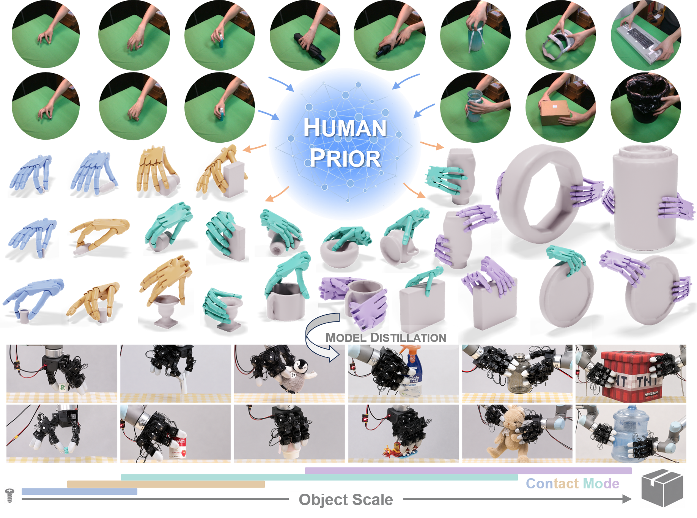
01 · Human → Sim → Real
Stable contacts, friction, forces, object motion, and in-hand interaction are all governed by physics. Many current VLA/WAM-style frameworks rely primarily on real-robot teleoperation data to inject this physics knowledge into policies.1π 0.5: a VLA with Open-World Generalization (Physical Intelligence, CoRL 2025) ↩,2LingBot-VA: Causal World Modeling for Robot Control (RobbyAnt, RSS 2026) ↩ Yet dexterous manipulation data are difficult to collect efficiently through teleoperation: collection is costly, the data are often tied to a particular hand embodiment, and people lack complete in-hand feedback for very fine dexterous control. As a result, it is difficult to pursue scalable data collection towards generalization to unfamiliar objects for dexterous manipulation.
High-fidelity physics simulation provides a lower-cost environment with more complete state and the freedom to explore physical interaction. It lets a system investigate contacts, forces, and recovery from failure at a scale far beyond real-robot teleoperation, accumulating physics knowledge for contact-rich manipulation.3SimToolReal: An Object-Centric Policy for Zero-Shot Dexterous Tool Manipulation (Kedia et al., RSS 2026) ↩
The sim-to-real gap remains a key challenge for robotics today. Rather than viewing it as a limitation, we see it as an opportunity: as simulation fidelity continues to improve, the gap will steadily narrow, making Human-to-Sim-to-Real an increasingly practical paradigm for robotic learning.
Multi-fingered manipulation involves high-dimensional control and rich contact interactions, creating an enormous search space for reinforcement learning and optimization. Human grasp behaviors, accumulated through lifelong experience, provide powerful priors that guide exploration toward effective and natural solutions while reducing the search burden.4EgoScale: Scaling Dexterous Manipulation with Diverse Egocentric Human Data (NVIDIA GEAR Lab, 2026) ↩
Human demonstrations are not the final answer—they provide guidance rather than exact robot actions. Humans contribute semantic and strategic priors, simulation provides scalable physical grounding, and the real world ultimately validates and refines deployment. Together, they form a promising Human → Sim → Real paradigm for dexterous manipulation.
02 · Capability focus
The long-term goal of dexterous robotics is general-purpose manipulation: enabling robots to perform the diverse manipulation behaviors that human hands can achieve.5Trends and Challenges in Robot Manipulation (Billard & Kragic, Science 2019) ↩ This vision requires fully exploiting multi-finger coordination, contact transitions, and in-hand object motion to produce contact-rich, long-horizon, and recoverable manipulation skills.
Grasping is a well-defined subset of this broader problem and should therefore be solved first. If robotic grasping cannot yet reach application-level robustness, general-purpose dexterous manipulation is even less likely to become practical. Grasping is therefore both a foundational capability and the first milestone toward general-purpose dexterous manipulation.
The current priorities differ. Both grasping and manipulation depend on understanding contact, friction, force, and object dynamics, making physics knowledge fundamental to both. However, grasping primarily pursues generalization across diverse objects and environments, while general-purpose manipulation primarily pursues dexterity through rich contact interactions.6CHORD: Learning Dexterous Manipulation Using Contact Wrench Guidance From Human Demonstration (NVIDIA, 2026) ↩
A practical grasping system should be able to pick up arbitrary objects from arbitrary poses and place them wherever they are needed. Achieving this requires broad zero-shot generalization to unfamiliar objects with diverse geometries, scales, poses, and reachable contact regions, while discovering stable initial grasps under realistic scene constraints. Such capability alone would already unlock enormous practical and commercial value.
03 · The challenge of unified grasping
Parallel grippers are inherently limited by their opening range, contact geometry, and load configuration, often restricting them to a narrow set of grasping strategies. Dexterous hands and bimanual systems dramatically expand this capability, enabling robots to grasp objects ranging from tiny screws with two fingers to large boxes with coordinated bimanual grasps.
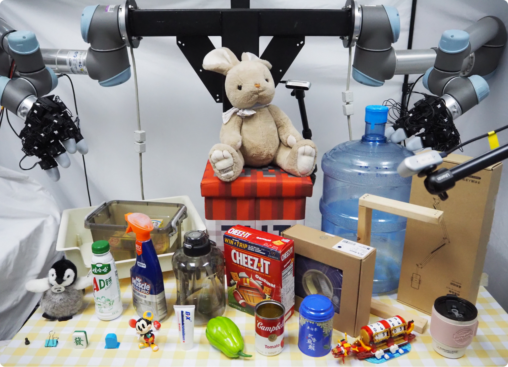
This flexibility, however, also introduces a much harder search problem. As object geometry, scale, pose, and scene constraints change, the appropriate grasp strategy changes as well. The robot must determine whether to use one hand or two, how many fingers should participate, where to approach the object, and which contact regions remain reachable. Even a single object may admit multiple equally valid grasps depending on the downstream task and surrounding environment.
Scale changes grasp modes. As objects become larger or smaller, successful grasping may require different numbers of hands, different finger participation, and entirely different contact patterns. Generalization therefore extends beyond object categories—it must also span object scales and grasp modes.
Unified dexterous grasping therefore goes beyond finding a stable five-fingered grasp. It requires discovering an appropriate grasp strategy across diverse object scales, geometries, poses, and scene constraints, while preserving the flexibility needed for subsequent manipulation. This broad zero-shot generalization is the central challenge that HUGS aims to address.
04 · HUGS
HUGS is a Human-prior-guided framework for Unified dexterous Grasp Synthesis across modes and scales. Instead of directly retargeting human demonstrations, it learns an object-conditioned human prior that proposes grasp modes and wrist starting points, then lets robot-specific optimization turn those proposals into physically feasible grasps.
In grasp pose optimization, the contact configuration \(c\) determines the number and locations of contact points, making the problem hybrid discrete-continuous. Existing methods typically reduce the combinatorial search space with predefined contact regions. Meanwhile, the wrist pose \(\mathbf{T}\) is highly global, and poor initializations often trap local optimization in suboptimal minima.
Consequently, optimization quality largely depends on initializing \(c\) and \(\mathbf{T}\), while optimizing the hand joint configuration \(\mathbf{Q}\) is relatively straightforward given suitable \(c\) and \(\mathbf{T}\). Existing methods mainly use fixed coarse heuristics to initialize contact configurations and wrist poses7DexGraspNet: A Large-Scale Robotic Dexterous Grasp Dataset for General Objects Based on Simulation (Wang et al., ICRA 2023) ↩,8BODex: Scalable and Efficient Robotic Dexterous Grasp Synthesis Using Bilevel Optimization (Chen et al., ICRA 2025) ↩,9BiDexGrasp: Coordinated Bimanual Dexterous Grasps across Object Geometries and Sizes (Lin et al., 2026) ↩, manually restricting to predefined strategies or wasting optimization budget on implausible modes. HUGS instead learns an object-conditioned human grasp prior to organize the search space before robot-specific optimization.
Four contact modes organize the search. HUGS uses Single-Two for small two-finger grasps, Single-Three as the minimum for force closure under frictional point contacts, Single-Full for denser single-hand grasps, and Both-Full for bimanual grasps on larger objects.
Based on this contact-mode abstraction, the learned prior predicts \(\pi(c \mid o)\) and \(\pi(\mathbf{T}_0 \mid c, o)\) to propose plausible contact modes \(c\) and wrist initializations \(\mathbf{T}_0\). Conditioned on these high-level proposals, the robot optimizer solves for \(\mathbf{Q}\) and refines \(\mathbf{T}\) under force-closure-aware optimization and feasibility constraints. The resulting large-scale dataset of synthesized grasps is then distilled into a generative model that, conditioned on the actual object geometry, automatically generates the appropriate grasp mode and robot configuration, enabling real-time grasp prediction at deployment.
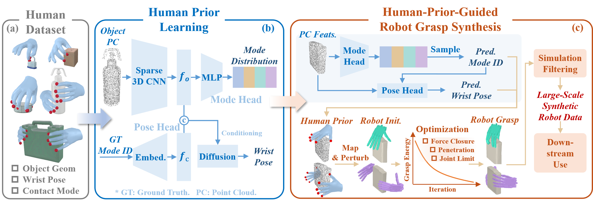
1
Compared with hand-crafted heuristics, the learned human prior provides object-aware global guidance that constrains optimization to more suitable regions of the search space.
2
Unlike direct retargeting, the learned prior generalizes to unseen objects, enabling scalable synthesis of large and diverse robotic grasp datasets from limited human demonstrations.
3
Force-aware optimization accounts for robot-specific kinematics and task physics, while tolerating small errors in the coarse human prior.
06 · What HUGS can do
HUGS brings together three connected capabilities within a unified framework: learning a generalizable human grasp prior across modes and scales, synthesizing large-scale robot grasp datasets in simulation, and inferring feasible grasps for real-world deployment.
The human prior is the first capability exposed by HUGS. It is learned from HUGS-Human, our self-collected human dataset containing 304 objects, 1.8K distinct grasps, and a broad range of object scales and contact modes. Rather than directly becoming the robot grasp, the learned prior shapes contact-mode and wrist-pose proposals, making downstream optimization more targeted across diverse object scales and grasp modes.
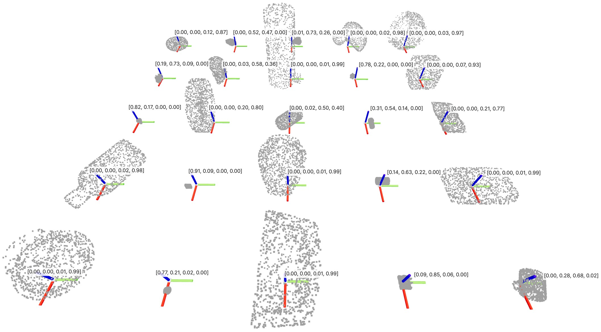
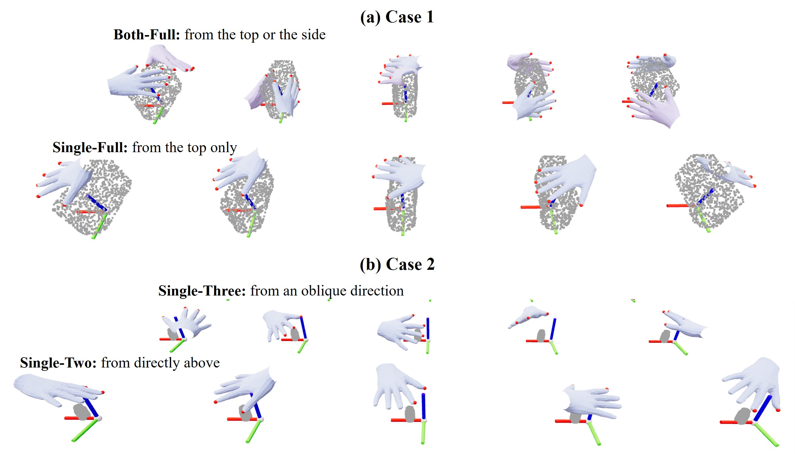
Guided by the learned human prior, HUGS efficiently synthesizes large-scale robot grasps across diverse object scales and contact modes. The examples below illustrate that the same synthesis pipeline generalizes to different robotic hands, including both the Shadow Hand and the LEAP Hand.
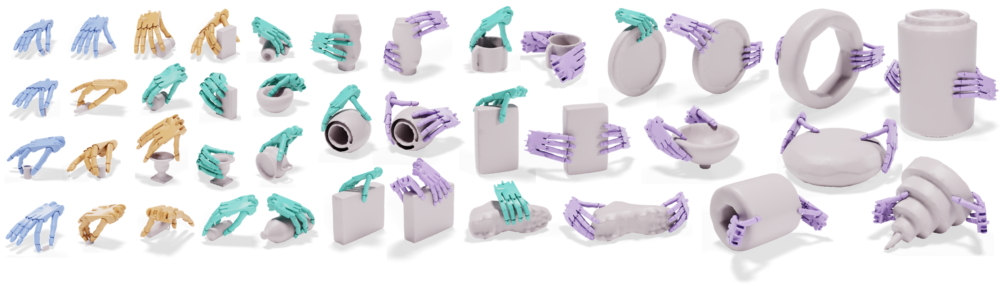
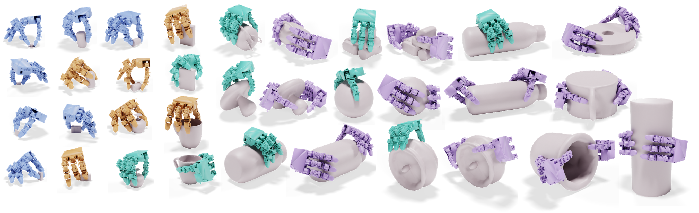
HUGS synthesizes 3.2M robotic grasps over 157K scenes on one robotic hand, spanning object half-diagonal lengths from 2 cm to 30 cm and contact modes from two-finger pinches to bimanual grasps. The same object can also admit multiple contact modes, reflecting the multi-mode nature of dexterous grasping.
The final step is bringing HUGS into the real world. A grasp generator trained on the large-scale synthetic dataset produced by HUGS learns to directly predict contact modes and grasp poses, enabling adaptive grasp selection across diverse object scales and cluttered scene constraints.
Mode diversity is not only a synthesis metric. It gives deployment a set of alternatives so scene constraints, reachability, and required grasping force can determine which valid grasp should be used.
07 · Quantitative evidence
After the capability view, the quantitative evidence follows the paper's three evaluation questions. First, does the object-conditioned human prior predict contact modes better than scalar-scale rules? Second, does that guidance improve efficient multi-mode grasp synthesis? Third, can the synthesized grasps supervise an online grasp generator?
Scale matters, but scale alone is not enough. The scalar-scale baseline groups objects by AABB half-diagonal length and predicts contact-mode distributions from training-set statistics, so it captures broad size trends while ignoring object geometry. On held-out HUGS-Human objects, the learned human prior better matches contact-mode preferences across all three metrics.
| Method | KL ↓ | Prec. ↑ | Rec. ↑ |
|---|---|---|---|
| Scale Rules | 0.612 | 0.805 | 0.892 |
| Human Prior | 0.300 | 0.873 | 0.964 |
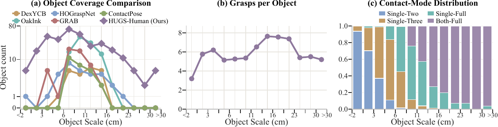
The synthesis experiment tests whether better mode prediction and better wrist initializations translate into validated robot grasps. HUGS uses the human prior to allocate optimization budget by object geometry and to initialize wrists, while the heuristic baselines use scalar-scale mode rules and convex-hull wrist sampling.
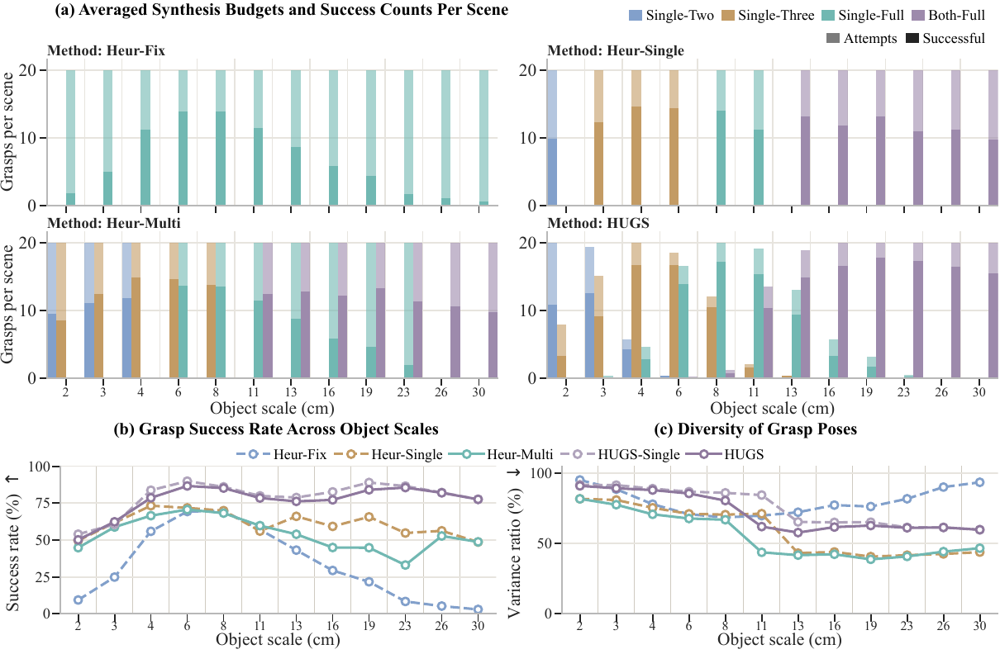
Heuristic baselines reveal the limits of scale-only rules. Heur-Fix works only near the scale suited to Single-Full. Heur-Single is more robust, but one scale-dependent mode cannot cover multiple valid strategies within the same scale. Heur-Multi adds mode diversity, yet wastes attempts on object-specific mismatches. HUGS consistently outperforms these baselines by making object-conditioned mode and wrist proposals.
Pose diversity also needs interpretation. HUGS has lower pose dispersion because it concentrates on human-preferred wrist regions. This is expected: heuristic sampling increases diversity partly through unnatural reversed wrist poses, which are difficult for humanoid robots to execute.
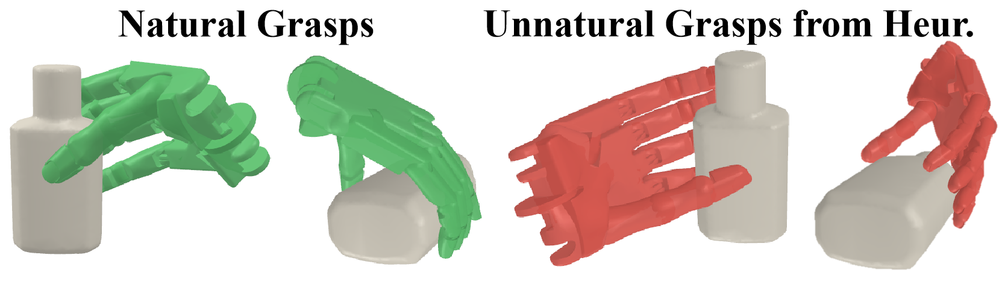
The final question moves from offline synthesis to learned inference. The paper trains identical lightweight object-conditioned generators on Heur-Multi data and HUGS data, then evaluates contact-mode availability prediction and grasp success on held-out scenes across scales.
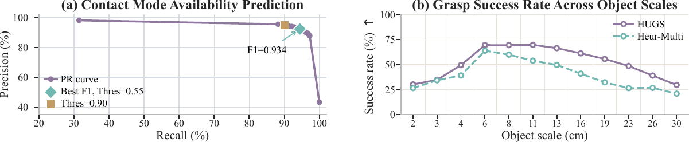
With HUGS data, contact-mode availability is accurately predicted, reaching a best F1 score of 0.934. In simulation, the HUGS-trained generator achieves higher grasp success than the Heur-Multi-trained one, showing that HUGS produces easier-to-learn training data with better tolerance to generated-grasp errors. Success remains above 70% for medium objects (6-13 cm), but drops on very small and large objects, showing that cross-scale, cross-mode grasp generation remains challenging.
09 · Citation
@article{yu2026hugs,
title={HUGS: Guiding Unified Dexterous Grasp Synthesis Across Modes and Scales via Learned Human Priors},
author={Mingrui Yu and Yongpeng Jiang and Yongyi Jia and Kangchen Lv and Xiangjie Yan and Li Huang and Yi Ren and Xiang Li},
journal={arXiv preprint arXiv:2607.04554},
year={2026},
}